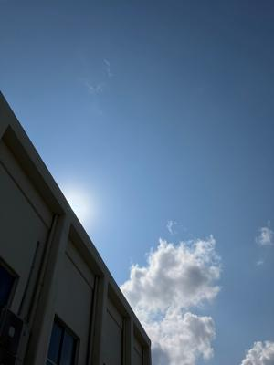
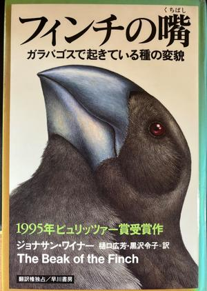

うるがいの話 ある日
最新: 右翼街宣車【うるがいの話 ある日】とは 一日だけのプログです
『うるがいの話』の最新一日だけのプログで、通信料が少なく経済的だ。カニの画像をクリックすると全ての日付が載る『うるがいの話』サイトを表示します
|
|
【うるがいの話】 うるがい(ｳﾙｶﾞｲ urugai)とは、『もずくがに』の名前でとても大きくなります。 |
|---|---|
|
|
【カミマヤーの話】 猫のことを方言でマヤーといいます。カミマヤー（kamimayaa）とは、神の猫のことです。 |
|
【たながぁの音楽】 たながぁ（ﾀﾅｶﾞｰ tanagaa）とは手長えびのことで、何種類かあり大きいのは車 エビぐらいになります。 |

|
【ぶながぁの話】 ぶながぁ(ﾌﾞﾅｶﾞｰ bunagaa)とは、赤い髪の毛、赤い身体、そして身長は１ｍ２０ｃｍ ぐらい、川の蟹を食べているの目撃された。場所は沖縄県国頭郡大宜味村のと ある村僕の隣近所に住んでいる爺さんから、聞いた話です。 |
|
|
【ギーマの話】 ギーマ(giima)とは、山原の里山に咲くスズランに似た、 花を付けます。実は食べられます、 気が付くと口の周りが紫になっています。 |
2023年05月13日 (土）右翼街宣車
15:32
 
内地へ行くコドモを、空港３階の出発便向けの降車駐車場で降ろす。右翼街宣
車が３台、大きな日の丸の旗を掲げて・・・、どう見ても出発じゃなく、誰か
を迎えに止まっていると思っていると駐車場を出ながら、横見で眺める。彼ら
の前に、覆面パトカーが先頭であり、その筋の警官が立って彼らを監視してい
た。
私たちは人の容姿にきわめて敏感で、思っている以上に容姿に運命を左右され
ているかもしれない。パスカルは『パンセ』の中で、「クレオパトラの鼻がも
う少し低かったら、世界の様相は変わっていたかもしれない」と書いた。鼻が
もう少し低くても、逆に高くても、ジュリアス・シーザーとマーク・アントニ
ーは彼女に恋をしなかったかもしれない。もし、クレオパトラの鼻がギリシャ
の理想美か らわずかにはずれて、クレオパトラの針と呼ばれるオベリスク
に似ていたら、アレクサンドリアの戦いも、アクティウムの海戦もなかったの
ではないか。ローマ帝国の勢力圏は、クレオパトラのくちばしによってつくり
変えられたとも言えるのだ。
フィッツロイ艦長はダーウィンと面接したとき、一見してダーウィンの鼻が気
にくわなかった。フィッツロイは人相学者を自任していて、船員の性格は頭の
形でわかると自慢していた。ダーウィンの鼻は怠け者の相を表わしていた。あ
やうく、ダーウィンは追い返されるところだったようだが、もしそうなってい
たら、『種の起源』も『人間の由来』も生まれなかっただろう。人類の思想の
歴史が、ダーウィンのくちばしによって変わっていたかもしれないのだ。
あまりにも、中味が濃すぎて不覚ながら完読を諦める。
１５時２７分 ビットコインの総資産 ￥１０、５３７（↑２４５）